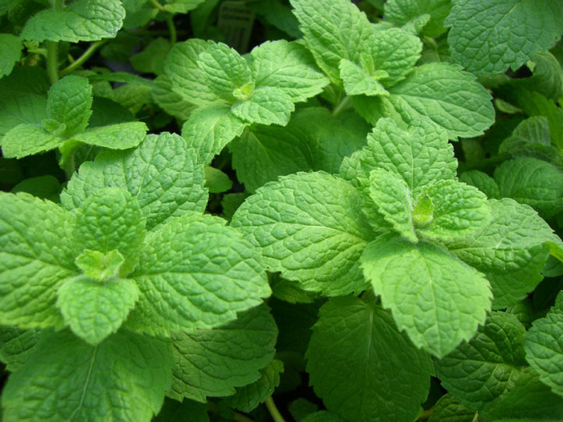

Мята - это растение. Основное использование в чаях, как освежающих, успокаивающих и тонизирующих напитках. Очень популярна в Англии, где культивируется примерно с XII века. Одно из интересных свойств, то что она отпугивает клещей и других кровососущих насекомых. Также мята способствовала более долгому хранению молока

Самая реалистичная версия происхождения русского названия "мята" - это происхождение от слова "мять", так как при разминании дает характерный запах